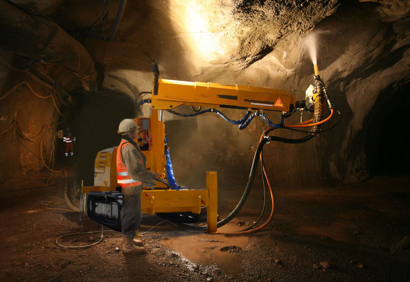
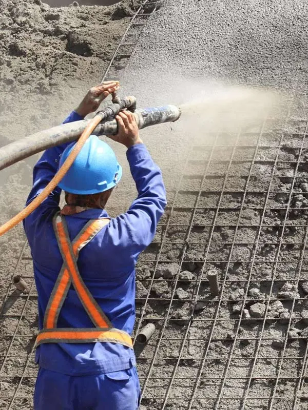
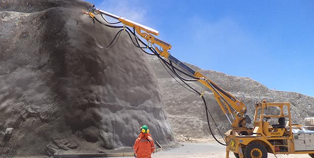
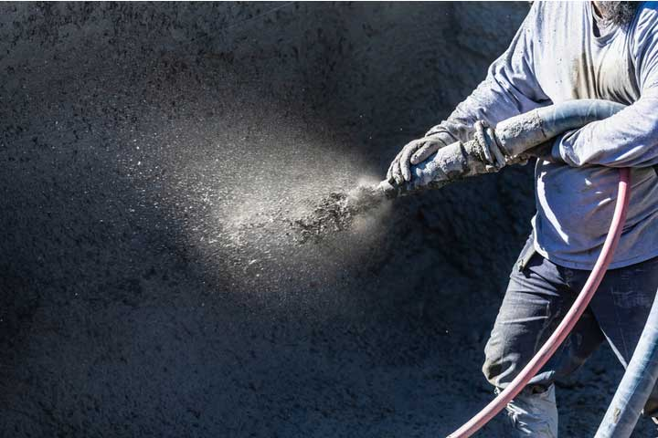
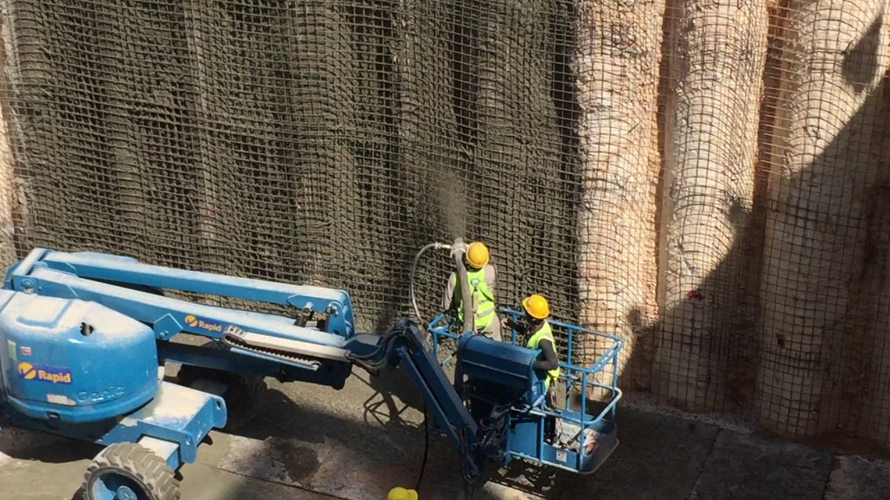
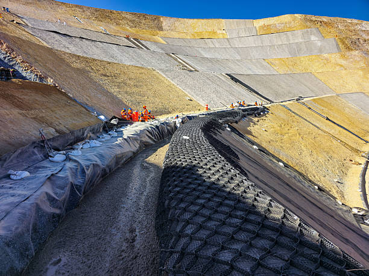
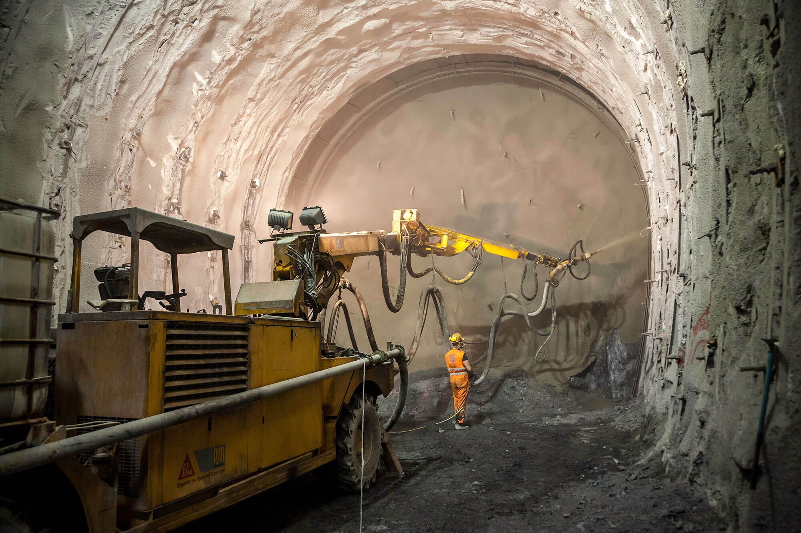
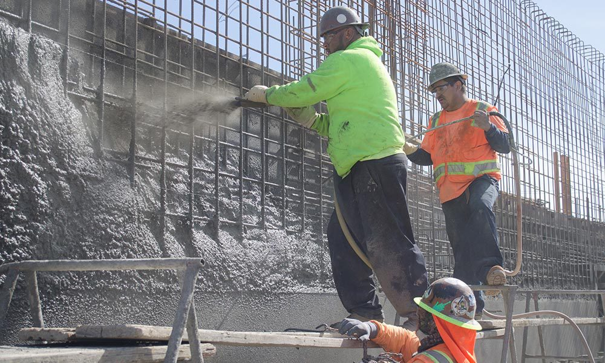
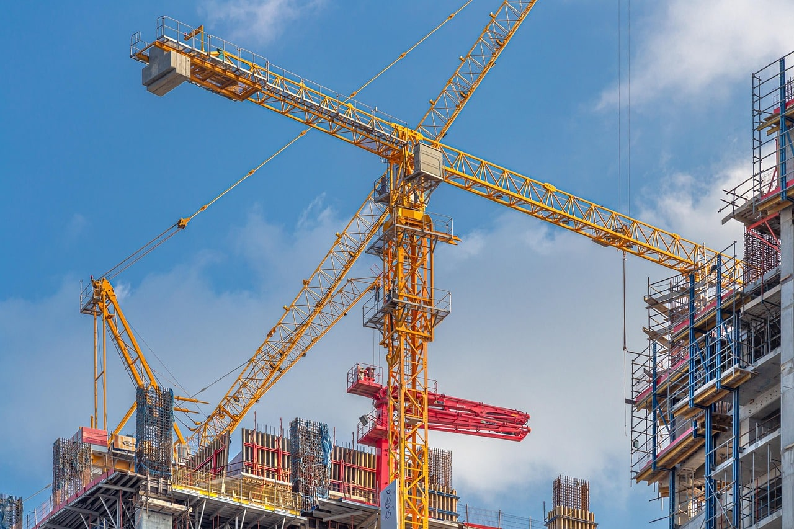
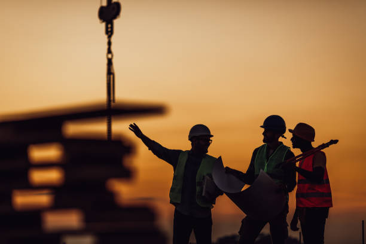

Shotcrete (Sprayed Concrete) Works



Shotcrete is an advanced and highly versatile construction technique in which concrete or mortar is pneumatically projected at high velocity onto a prepared surface to form a dense, compact, and durable structural layer. This process ensures excellent bonding with the substrate, making it an ideal solution for both new construction and rehabilitation works.
Due to its ability to be applied on vertical, inclined, and overhead surfaces without the need for conventional formwork, shotcrete has become a preferred method in modern construction, particularly in complex and space-constrained environments.
At AmmA Groups, we provide professional shotcrete application services tailored for structural reinforcement, ground support, and surface protection. Our expertise covers a wide range of projects, including basements, deep excavations, infrastructure developments, and underground structures across India. With a strong focus on quality and precision, we ensure that each application meets the highest standards of strength, durability, and long-term performance.

Shotcrete is widely recognized for its effectiveness in structural strengthening and stabilization. When applied correctly, it forms a monolithic layer that enhances load-bearing capacity and protects existing structures from environmental exposure and deterioration. It is particularly beneficial in situations where traditional concrete placement is difficult or impractical, such as confined excavation zones, irregular surfaces, or areas requiring immediate support.

Our shotcrete services are suitable for a broad range of applications. In basement and deep excavation projects, shotcrete is used to stabilize exposed soil faces and provide immediate support, reducing the risk of collapse or deformation. For retaining walls, it acts as a strengthening layer that improves structural integrity and resistance to lateral earth pressures.

In soil and slope stabilization works, shotcrete plays a critical role in preventing erosion and surface instability. When combined with soil nailing or anchoring systems, it creates a reinforced structural system capable of withstanding environmental and loading conditions. This makes it highly effective in infrastructure projects involving cut slopes, embankments, and hillside developments.

Shotcrete is also extensively used in tunnel and underground structure linings, where it provides both structural support and surface protection. Its rapid application and quick strength gain make it ideal for such environments, ensuring safety and efficiency during construction. Additionally, it is widely applied in structural repair and rehabilitation projects to restore damaged concrete, improve durability, and extend the service life of existing structures.
For concrete surface protection, shotcrete acts as a protective barrier against moisture ingress, chemical exposure, and environmental wear. It enhances the impermeability and resilience of the surface, making it suitable for harsh conditions where long-term durability is essential. In foundation and structural reinforcement applications, it provides additional strength and confinement, improving the overall performance of the structure.
Precision in Application, Strength in Performance
High-Performance Shotcrete Solutions Integrating Advanced Materials, Controlled Application, and Reliable Structural Stabilization
One of the key advantages of our service is the integration of high-quality materials and controlled application techniques. We utilize carefully designed mix proportions and, where required, incorporate our in-house developed admixtures to enhance bonding, strength, and durability.
Our skilled team ensures proper surface preparation, controlled spraying, and thorough compaction, resulting in a uniform and defect-free finish.
Shotcrete is particularly effective in challenging construction environments, where rapid stabilization and reliable performance are critical. Its ability to conform to complex geometries, combined with high strength and excellent adhesion, makes it an indispensable solution for modern engineering needs.
At AmmA Groups, we combine technical expertise, advanced equipment, and quality-controlled materials to deliver shotcrete solutions that meet the demands of both construction and rehabilitation projects. Our commitment to safety, efficiency, and durability ensures that every application provides long-lasting structural support and protection.
Whether for new construction, ground stabilization, or structural repair, our shotcrete services are designed to deliver consistent, high-performance results—helping you build and maintain safe, stable, and durable structures in even the most demanding conditions.


